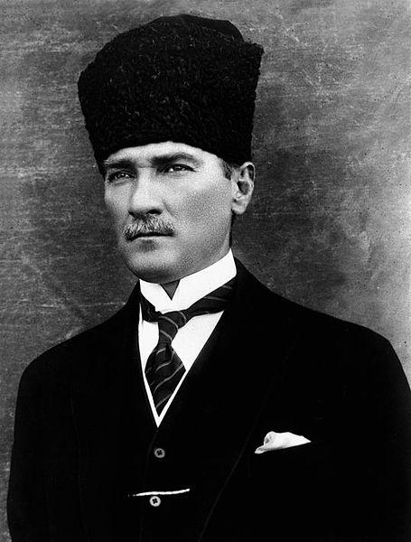

Father of the Turks

Atatürk was a Turkish nationalist leader and founder and first president of the republic of Turkey.Mustafa Kemal Atatürk was born in 1881 in Salonika (now Thessaloniki) in what was then the Ottoman Empire.In 1911, he served against the Italians in Libya and then in the Balkan Wars (1912 - 1913). He made his military reputation repelling the Allied invasion at the Dardanelles in 1915.In May 1919, Atatürk began a nationalist revolution in Anatolia, organising resistance to the peace settlement imposed on Turkey by the victorious Allies. This was particularly focused on resisting Greek attempts to seize Smyrna and its hinterland. Victory over the Greeks enabled him to secure revision of the peace settlement in the Treaty of Lausanne.In 1921, Atatürk established a provisional government in Ankara. The following year the Ottoman Sultanate was formally abolished and, in 1923, Turkey became a secular republic with Atatürk as its president. He established a single party regime that lasted almost without interruption until 1945.He launched a programme of revolutionary social and political reform to modernise Turkey. These reforms included the emancipation of women, the abolition of all Islamic institutions and the introduction of Western legal codes, dress, calendar and alphabet, replacing the Arabic script with a Latin one. Abroad he pursued a policy of neutrality, establishing friendly relations with Turkey's neighbours.In 1935, when surnames were introduced in Turkey, he was given the name Atatürk, meaning 'Father of the Turks'. He died on 10 November 1938.
Considered the George Washington of the Turks, Atatürk almost single-handedly created modern-day Turkey from the battle-torn, corrupt, demoralized remnants of the Ottoman Empire. As the map of Europe was being redrawn at the end of World War I, this confident war hero put forth a clear and complete vision that persuaded the Turks, on the brink of an epic crisis, to forge a modern nation.By the early 20th century, the Turkish people were in dire straits. After centuries of decline, the Ottoman Empire — known as the "Sick Man of Europe" — had allied itself with Germany, which eventually pulled it into World War I. But even as the Ottoman Empire floundered, a wily officer named Mustafa Kemal proved his military mettle, successfully defending Gallipoli with a handful of poorly equipped soldiers against a huge armada.
Rescuing his nation from the buffet line of European colonialism would have been enough, but Atatürk was far from finished. He envisioned a modern, progressive Turkey that would eschew the outmoded values of the Ottoman Empire in favor of real European-style democracy.
Rarely in history has anyone exerted such power with such effect in so short time.
In less than 10 years, Atatürk aligned Turkey with the West rather than the East. He separated religion and state (by removing Islam as the state religion and upholding civil law over Islamic law), adopted the Western calendardecreed that Turks should have surnames, similar to Western custom, changed the alphabet from Arabic script to Roman letters, distanced Turkey from the corrupt Ottoman Empire by abolishing the sultanate and caliphate, and outlawing the fez and veil, abolished polygamy, and, emancipated women (at least on paper).
Atatürk died at 9:05 on November 10, 1938 — and every year, all of Turkey still observes a minute of silence at 9:05 on that day to honor the man they regard as the greatest Turk. For a generation, many young Turkish women actually worried that they'd never be able to really love a man as they already had so much love for the father of their country. Because of Atatürk, today's 85 million Turks have a flag — and reason to wave it.